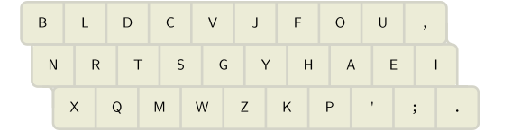
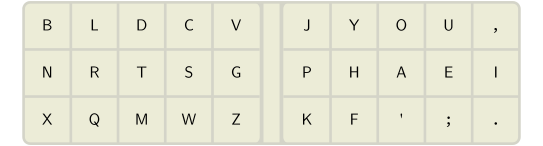
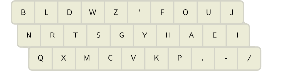
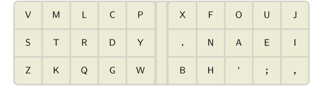
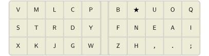
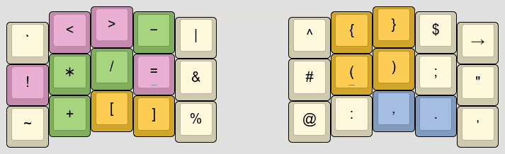
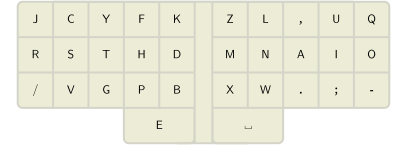
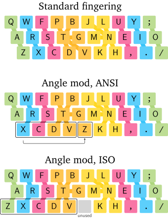
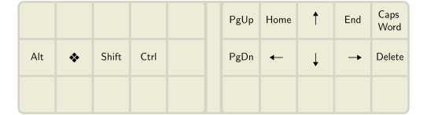

A guide to alt keyboard layouts (why, how, which one?)
Pascal Getreuer, 2022-05-15 (updated 2026-02-21)
- Overview
- Which alt keyboard layout should I learn?
- Which layout is best for programming?
- Which layout is best for smartphones?
- Why do people want to use alt layouts?
- Should I use an alt layout?
- Outside the box
- How long does it take to learn an alt layout?
- How to install an alt layout?
- How to learn an alt layout?
- What about languages other than English?
- What about Vim?
- What about keycap legends?
- Is it really that hard to arrange 30 keys?
- Further reading
Overview
This post is about switching from QWERTY to an alternative keyboard layout. Why and how do people switch? Which alt layout is best—Dvorak, Colemak, …?
Which alt keyboard layout should I learn?
There is no consensus on what is the “best” layout. No layout is perfect. Layout design is a balancing act of many competing objectives, and the right balance is subjective.
I highly recommend reading the Keyboard layouts doc. This is a valuable resource for anyone interested in alt keyboard layouts. It explains concepts and terminology for how to compare keyboard layouts, suggestions on how to choose a layout, and practical tips on how to learn a new layout.
Here are metrics for a sampling of some better known layouts. Lower is better for same-finger bigrams (SFBs), LSBs, scissors, redirects, and off-home pinky use; higher is better for rolls.
| Layout | SFBs | LSBs | Scissor | Rolls | Redir | Pinky off |
|---|---|---|---|---|---|---|
| QWERTY (1873) | 4.38% | 4.55% | 1.46% | 40.76% | 6.22% | 2.47% |
| Dvorak (1936) | 1.87% | 0.80% | 0.08% | 39.20% | 1.55% | 4.13% |
| Arensito (2001) | 0.96% | 1.22% | 0.45% | 54.55% | 5.28% | 1.48% |
| Colemak (2006) | 0.91% | 2.26% | 0.26% | 49.20% | 5.33% | 0.78% |
| Workman (2010) | 1.97% | 1.11% | 0.47% | 47.40% | 6.05% | 0.78% |
| MTGAP (2010) | 0.92% | 0.46% | 0.15% | 46.34% | 1.78% | 3.80% |
| Colemak-DH (2014) | 0.91% | 1.27% | 0.15% | 49.20% | 5.33% | 0.78% |
| Halmak (2016) | 1.97% | 0.40% | 0.56% | 40.11% | 2.52% | 5.48% |
| BEAKL19bis (2020) | 0.95% | 1.52% | 0.39% | 43.74% | 1.50% | 2.26% |
| Handsdown Neu (2021) | 0.76% | 1.26% | 0.42% | 44.04% | 1.48% | 2.89% |
| Engram (2021) | 1.01% | 0.41% | 0.36% | 44.32% | 2.27% | 5.71% |
| Semimak (2021) | 0.59% | 1.65% | 0.39% | 44.70% | 4.48% | 3.76% |
| APTv3 (2021) | 0.81% | 0.33% | 0.11% | 49.55% | 3.60% | 3.45% |
| Nerps (2022) | 0.85% | 1.24% | 1.11% | 46.31% | 1.66% | 1.32% |
| Canary (2022) | 0.66% | 1.75% | 0.42% | 50.36% | 3.39% | 2.96% |
| Sturdy (2022) | 0.62% | 1.58% | 0.42% | 50.10% | 2.85% | 2.09% |
| Gallium (2023) | 0.64% | 0.85% | 0.42% | 46.07% | 1.87% | 3.16% |
| Graphite (2023) | 0.68% | 0.87% | 0.41% | 46.01% | 1.80% | 2.34% |
| Recurva (2023) | 0.56% | 1.19% | 0.44% | 50.19% | 2.79% | 4.40% |
| Focal (2024) | 0.53% | 0.99% | 0.46% | 47.00% | 2.93% | 2.09% |
See Layouts with thumb keys for metrics on layouts with thumb keys.
See also this page for an expanded version of this table.
(2025-12-28) Gallium updated to Gallium V2.
This table is periodically updated. Metrics are computed for English with Cyanophage’s layout playground.
If you don’t know what to pick, Gallium is recommended.
Some recent favorites on r/KeyboardLayouts and Alt Keyboard Layouts Discord are Gallium (or the very similar Graphite), Sturdy, and Canary. Each of these layouts came from distinct design priorities, which is interesting to see reflected in the metrics in the table above.
Gallium (Bryson James (GalileoBlues), 2023) takes inspiration from Nerps and Sturdy. Gallium is very similar to Graphite (Richard Davison, 2023), which is also highly recommended. Gallium and Graphite differ mainly in punctuation keys, and considering the j key, Gallium may be preferable for Vim (see What about Vim).


Besides Gallium vs. Graphite, a further wrinkle is that Gallium has variants for row-staggered vs. column-staggered keys, differing by a cycle of Y, P, F. Graphite has just one variant, designed with row stagger in mind.

Gallium and Graphite are both extensively tested with many happy users. They are balanced in the sense of perform decently across all main layout metrics. Other layouts listed here are more “opinionated” and vary in which metrics are favored.
Sturdy (Oxey, 2022) is particularly remarkable in that it has very high rolls while attaining relatively low redirects. This is a rare combination, as these metrics are usually in opposition. It also scores well in SFBs and reasonably in other metrics. It was created with Oxeylyzer.

Canary (Apsu, 2022) is heavily Colemak inspired. It might be considered an evolution of Colemak to take row stagger into account, make the
Ykey more comfortable, and optimize the metrics, especially in SFBs and redirects.Colemak-DH (SteveP, 2014) is a light modification of Colemak (Shai Coleman, 2006) to reduce LSBs. It is an older layout, and the layouts above in this list are considered to have improved metrics generally. Nevertheless, Colemak-DH is a solid layout and continues to be quite popular in the custom keyboard community. Colemak and Colemak-DH have the ergonomically attractive property of very low off-home pinky use. Additionally for sake of common hotkeys, Colemak-DH maintains the QWERTY positions of the Z, X, C keys, and Colemak additionally maintains V.

See also Layouts Wiki Recommended Layouts, which describes and compares these layouts in further detail.
✨ Magic Sturdy. If you are daring to consider something more experimental, I use Ikcelaks’ Magic Sturdy, a variation of Sturdy. The “magic” is a key whose function depends on the last pressed key (aka an “adaptive” key). This key is used to remove the top SFBs and type common n-grams. It’s a magical typing experience!

A ★ = O C
★ = Y D ★ =
Y E ★ = U
G ★ = Y
I ★ = ON L
★ = K M ★ =
ENT N ★ = ION
O ★ = A
P ★ = Y Q
★ = UEN R ★ =
L S ★ = K
T ★ = MENT
U ★ = E Y
★ = P ⎵ ★ =
THE . ★ = ./
# ★ = INCLUDE
The magic key is implemented in QMK using the Alternate Repeat Key. Or in Kanata, one can implement magic keys using Kanta’s switch and key-history constructs.
More magic: Magic Romak, Nordrassil, Vylet, Afterburner, and Magic Roll are a few other layouts designed with an integrated magic key.
Which layout is best for programming?
See also Designing a symbol layer.
The main bottleneck in writing code is not the alphas layout,
but typing symbols. Conventional layouts put many common
symbols in awfully inconvenient places. For instance, equals
= and underscore _ are among the most used
symbols in code, yet they are 2u above home row on the right pinky. They
could hardly be worse. And < and > are
1u below home row, so there is an awkward 3u scissor in typing
<= and >=.
I recommend creating a symbol layer: a secondary
layer of symbol keys accessed by holding a layer switch. Here is an
example, with common symbols on home row and syntax patterns
!= -> += ): etc. as comfortable rolls.

Layers are a common feature on programmable keyboards. Alternatively, a software keyboard remapper like Kanata works on most keyboards to implement layers.
A symbol layer should be personalized to the programming
languages you use. There is no one-size-fits-all “best symbol
layer.” Which symbols are typed most differ by programming language.
What symbol n-grams occur differ as well considering language-specific
syntax, like => in JavaScript and C#, and the Rust
turbofish “::<type>.”
See Designing a symbol layer for further discussion and examples.
Which layout is best for smartphones?
On a smartphone, QWERTY turns out to be surprisingly good. Or if you’d like a layout specifically designed for the smartphone, see ClearFlow and MessagEase.
Typing on a smartphone with two thumbs is different from typing on a
physical keyboard with all ten fingers. On a small smartphone screen, it
is hard for fat thumbs to hit keys accurately. To compensate,
smartphones use predictive autocorrection to fix typos where a key press
is spatially a little off. On QWERTY on my Android phone, typing
“thwre” gets instantly corrected to
“there,” noting that the W key is adjacent to
E and that, of course, “thwre” is not an English word. QWERTY’s high
finger travel is usually criticized, yet this turns out to be an
advantage in making this prediction effective.
Predictive autocorrection is less effective on keyboard-optimized
layouts like Colemak and most others discussed in this post. These
layouts aim to reduce finger travel, and consequently, hitting an
adjacent key by mistake is more likely to form a valid (but unintended!)
word. On Colemak for example, the keys typed in “is”
vs. “it” or “near” vs. “hear”
vs. “hers” differ spatially by just 1u.
Why do people want to use alt layouts?
The main motivation for alt layouts is better typing comfort. Alternatives to QWERTY dramatically reduce awkward typing motions such as same-finger bigrams (SFBs), reduce how much your fingers need to move (finger travel) to accomplish the same typing, and balance the typing workload over the fingers more evenly.
QWERTY was designed by Christopher Sholes in the early 1870s for the Sholes and Glidden mechanical typewriter. It’s often said QWERTY was designed to avoid the typebars from jamming, though it’s debatable whether that’s historically accurate.

What is obvious though is that QWERTY has a lot of SFBs, like
ed, un, rt, ol, much
more than any popular alt layout. Think about typing “loft”
or “unjust.” Those same-finger movements are slow and
awkward to type.
To be fair, QWERTY was basically the first successful layout, a pioneering solution to a tough problem. It shouldn’t be surprising that its metrics are far from optimal. At the time it was created, the activity of typing itself was new.
Should I use an alt layout?
It’s your choice. You don’t have to learn an alt layout.
Switching to an alt layout takes a lot of effort (at least a couple months of daily practice), and the benefits are not huge. I don’t mean to be discouraging, just raising some counterpoints:
If your hope is that changing layout will increase your typing speed, let me point out that speed is a matter of typing practice, not layout. There are plenty of extremely fast speed typists who use QWERTY. And the fastest typists (exceeding 300 wpm) don’t use regular keyboards at all, instead they use stenotype. See also I type XXX wpm – Is that fast?
If your motivation is typing comfort, consider first correcting your posture, switching to a split columnar keyboard (these keyboards are awesome!), try DreymaR’s Extend Layer, or switch to a modal editor like Vim—all of these things are more impactful and easier to do than learning a new layout.
So why do it? For me, switching to an alt layout is a long-term investment in my health and comfort. I will type a lot in my life (I work as a software engineer), so spending several months learning a new layout is a fair price.
Outside the box
Most layouts are designed to work with two-handed typing on a standard keyboard. But some layouts go outside the box. Arguably, these differ enough from standard typing that they are not just “layouts” but distinct input systems.
Layouts with thumb keys
Some layouts designed for split ergo keyboards
use a thumb key (or
sometimes multiple thumb keys) to type E or other letters.
The first such layout was the Maltron layout
(1977), placing E on the left thumb. Some more recent
examples are the RSTHD
layout, Nordrassil, and Hands
Down Promethium.

Metrics for a few such layouts:
| Layout | SFBs | LSBs | Scissor | Rolls | Redir | Pinky off |
|---|---|---|---|---|---|---|
| Maltron (1977) | 0.66% | 0.70% | 0.11% | 50.89% | 6.62% | 4.86% |
| RSTHD (2016) | 0.70% | 0.81% | 0.09% | 53.20% | 6.40% | 0.79% |
| Vibranium (2023) | 0.57% | 0.36% | 0.44% | 46.93% | 1.29% | 4.11% |
| Promethium (2024) | 0.58% | 0.24% | 0.11% | 45.75% | 1.53% | 4.08% |
| Caster (2024) | 0.63% | 0.05% | 0.54% | 50.87% | 5.65% | 3.40% |
| Nordrassil (2024) | 0.77% | 0.85% | 0.33% | 43.63% | 1.10% | 1.88% |
| Night (2024) | 0.41% | 1.26% | 0.63% | 45.87% | 3.00% | 3.06% |
| Enthium v10 (2025) | 0.42% | 0.15% | 0.08% | 46.52% | 2.18% | 3.31% |
Many other thumb key layouts are catalogued and discussed in
Precondition’s post Pressing
E with the thumb. The advantages are gaining a free home row key and
removing conflicts with bigrams involving E for significant
improvement in SFBs, as well as other metrics. A downside is that such
layouts are not usable (without creativity) on conventional keyboards.
Another potential concern is the extra load on the thumbs—PSA: Thumbs can get overuse
injuries.
One-handed typing devices and layouts
A variety of methods have been developed for typing with one hand. Many of these use chording heavily to represent a complete set of keyboard functions on few physical keys.
On QMK keyboards, the Swap Hands feature temporarily mirrors the keymap to enable one-handed typing without requiring a separate layer. See also Half-QWERTY on the ease of learning of this approach.
There are one-handed variants of the Dvorak layout.
Maltron specializes in one-handed keyboards. The left-handed keyboard looks like a large, 8-row concave key well on the left plus a numpad on the right.
FrogPad is a keyboard the size of a num keypad designed for typing with one hand.
The Tap Strap 2 is a wearable one-handed keyboard and mouse controller.
A well-known older one-handed system is Doug Engelbart’s five-key Keyset (~1965).
Ardux is a one-handed keyboard system available in several sizes, from 8 to 36 keys.
Taipo is a layout with 10 keys per hand. The layout is intended to be used with a mirror copy on each hand, but can also be used one-handed. Posh is a smaller variant that removes pinky keys.
How long does it take to learn an alt layout?
Realistically, expect it to take at least a couple months of daily typing practice. Switching to a new layout is a large undertaking.
I have switched layouts a half dozen times. My progression tends to be 40 wpm after the first month, 50 wpm after the second month, and 80 wpm after the first year. Other people have reported similar order-of-months experience to learn a new layout. Your mileage may vary. Rate of progress depends on how similar the new layout is to your familiar layout (more similar implying quicker to learn), how consistently and how much you practice, and how much sleep you get (yes, seriously).
It’s worth it for the comfort, but be patient and approach it as a long project. Developing muscle memory takes time and consistent practice.
How to install an alt layout?
There are multiple possible ways to install a keyboard layout. Some depend on operating system, and can get quite confusing. I suggest one of the following as the easiest: use the Kanata remapping software, or buy a programmable keyboard.
Kanata (software solution)
The Kanata keyboard remapping software is a free and software-only tool for redefining the function of the keys on your keyboard. It also supports advanced behaviors like multiple layers, tap-hold keys, macros, and Unicode input. Kanata works on Windows, Mac, and Linux and is compatible with almost any keyboard.
Instructions:
Follow Kanata’s installation instructions for your operating system.
Write a configuration file. At its simplest, this begins with a “
defsrc” section to tell Kanata which “source” keyboard keys it will modify, followed by a “deflayer” definition of remapped behaviors. The following example (reproduced from the documentation) remaps the keyboard with Dvorak layout:(defsrc grv 1 2 3 4 5 6 7 8 9 0 - = bspc tab q w e r t y u i o p [ ] \ caps a s d f g h j k l ; ' ret lsft z x c v b n m , . / rsft lctl lmet lalt spc ralt rmet rctl ) (deflayer dvorak grv 1 2 3 4 5 6 7 8 9 0 [ ] bspc tab ' , . p y f g c r l / = \ caps a o e u i d h t n s - ret lsft ; q j k x b m w v z rsft lctl lmet lalt spc ralt rmet rctl )More sample configurations are under the cfg_samples folder. See the Kanata Configuration Guide for detailed explanation and documentation of Kanata’s many other capabilities.
Start Kanata as described here for your operating system, passing your configuration file after the
--cfgargument.
Programmable keyboard (hardware solution)
Another solution is to get a programmable keyboard, that is, one running QMK firmware, VIA, Vial, ZMK, or similar. The essential feature of such a keyboard is that the behavior of each key may be defined, and this definition is stored on the keyboard itself. An advantage is that your layout requires no special software on the computer. It is also portable, you can plug the keyboard into any computer and use your layout.
To buy a programmable keyboard, KeebFinder is a great tool that searches a catalog of keyboards for given parameters.
If you are simultaneously interested in ergonomics, see Keyboard shopping tips.
How to learn an alt layout?
It doesn’t have to be cold turkey. The first couple weeks are the hardest since your typing will be frustratingly slow. Some people believe in switching to using the new layout alone “cold turkey” as the best way to learn. You can do that, but this isn’t necessary. In the first couple weeks, I’ve found decent progress doing 30 minutes of practice a day on the new layout, then switching back to my familiar layout for the rest of the day. Then once getting to a usable 30 wpm or so, switching the new layout full time is more bearable.
Obligatory warnings
⚠ Ensure that you can type your computer password in the new layout. Otherwise you might get locked out!
⚠ It is essential that you use the layout’s intended finger placement, that each key is typed with the intended finger. Failing to do this effectively changes the layout’s SFBs, likely dramatically for the worse and ruining the layout. Consider learning a new layout as an opportunity to brush up on touch typing (Should I learn how to touch type?).
Pay attention whether the layout is described for “angle mod” finger placement. By default, standard fingering is assumed as in the top figure. An angle-modded layout follows the middle or bottom figure:

⚠ Be careful about rearranging keys in a layout for the same reason as the previous point. Rearranging keys is likely to ruin the layout unless you know what you are doing. If you do want to rearrange keys, use an analyzer tool like Oxey’s layout playground to check how metrics are affected and read the Keyboard layouts doc to learn the fundamentals of layout design.
A suggested training approach
With the warnings out of the way, here is a suggested approach to learning a layout.
(~5 minutes) First, memorize the position of each letter in the layout. Get a paper and pen and draw the layout. Draw it again and again, repeating until you have every letter memorized. Once successful, hopefully, you are able to close your eyes and visualize the layout in your mind, a significant first step in acquiring a layout. You can also save one of your layout drawings as a cheat sheet for later reference, though hopefully after this exercise you’ll rarely need it.
(2–3 days) Next, begin training your fingers on keybr.com. The keybr.com typing practice site is excellent for this early stage of learning. It uses an approach of starting with a handful of common letters and exercises of typing words with those letters. Once you reach a required proficiency on those letters, more letters are introduced, one at a time. Practice on keybr every day for at least 30 minutes. Eventually, you learn all the letters, and by that point should be able to type in the new layout at 20 wpm, if not more. You are then ready to graduate to other practice methods.
There are many good typing practice sites. General advice is to strive for 99% accuracy, try not to sacrifice accuracy for speed, and try to continue practicing daily. Consistent practice with focus on accuracy will naturally improve your speed over time.
See what you like from the following practice sites:
MonkeyType is excellent for typing practice—once configured. I suggest going under settings and set the “stop on error” mode to “word.” This way, MonkeyType forces you to correct typing errors before continuing to the next word.
Beware that the default
englishmode samples from a vocabulary of only 200 words. This is fine in the early stage for building up speed on some common words, but for general typing skill this is pretty useless. You’ll want to advance to a larger vocabulary likeenglish 5k. See also Gary Internet’s Typing Guide and the first section of the Keyboard layouts doc for tips on how to use MonkeyType effectively.TypingClub is excellent if you want a guided curriculum, as opposed to how other sites on this list are open-ended practice tools. TypingClub is free to use with a paid option to remove ads and access to additional games. The site guides you starting from the very basics (which you may skip if you practiced on keybr as described above) to +50 wpm through a sequence of typing exercises, each requiring steadily higher proficiency to pass.
Problem Words focuses on typing accuracy. Whenever a word is mistyped, it is added to your list of “problem words” and it will appear again in subsequent exercises. Once you successfully type a problem word several times without typos, it is removed from the list.
Ngram Type is a little tool for getting fast at common n-grams and building up speed.
Entertrained has you pick a book (among a selection of famous works like Dracula and Crime and Punishment), then essentially, you type the book as typing practice. To make this manageable, the each paragraph is considered its own exercise, after which you may pause and rest before beginning the next paragraph, and all progress is saved. Entertrained is my latest favorite typing practice site. It’s more fun than typing random words.
What about languages other than English?
🇳🇱 🇫🇷 🇩🇪 🇵🇱 🇪🇸 🇸🇪
Most alt layout development is optimized for typing in the English language. Unfortunately, English-optimized layouts may be poor designs for other languages.
Non-English keyboards may include additional letters compared to English, such as an Ñ key on Spanish keyboards and keys for umlauted and accented letters on the German QWERTZ layout. These letters are missing in layouts designed for English.
Even when considering English letters only, letter frequencies differ across languages, enormously in some cases. In French for instance, letter
qis 10x more frequent and letterwis 50x less frequent than in English. N-gram statistics are different too, of course, disrupting SFBs, rolls, and other layout metrics.And, of course, typing in Chinese, Cyrillic, and other non-Latin script languages is different entirely.
Some pointers: The following are worth a look, depending on your language(s) of interest:
| Layout | Designed for… |
|---|---|
| Gallium-NL | English + Dutch |
| Ergo-L | English + French |
| Noted | English + German |
| Anymak:END | English + German + Dutch |
| Kordos | English + Polish |
| Canaria | English + Spanish |
| Fahller | English + Swedish |
| Bépo | French |
| Neo | German |
| Engram-es | Spanish |
Evaluating a layout for non-English typing: For the major Western European languages, Cyanophage’s Layout Playground or Oxey’s Layout Playground are useful tools. Both of these playground web apps have a dropdown menu to select the language, making it possible to include language-specific keys and to compute metrics according to that language’s letter statistics. You can use them to evaluate English-optimized layouts to find which better fit your language. You can also edit a layout to fix its shortcomings.
Designing multi-lingual layouts: If you aim to create a layout for typing in two (or more?) languages, keep in mind that it is impossible to make it perfect for both. Even layouts optimized for just one language are imperfect. Instead, address the worst spots and look for a solution that has decently tolerable metrics at the same time for both languages.
What about Vim?
If you use an editor with Vim key bindings, pay attention to the positions of j, k, w, and b. Alt layouts optimized for English tend to put j and k somewhere awkward, like a corner pinky key, being rare English letters (ranks 24 and 22 in Norvig’s data). This is sensible for general typing, but problematic for Vim, where j and k are used for vertical navigation. Depending on how you navigate, w and b may be similarly troubled, with their frequencies in English being relatively low (ranks 18 and 20).
To make the point, here is a real keylog snippet of me editing C code in Vim. About half of my keystrokes are commands, not written text:
{ } ko2 c2 ko V(yes_token); yes_token = INV n; jdd wjj>> wkkwkcwYES_START
jjjjddkkpjyykkpjo} k<< wjk} return false; case YES_STOP kjddkkkkp<<..o
jjjJJuww && j<<jdd wjkkA: k<<jdj<<kyyjpwwwwwwwwxjdj<<j<<jddjcwreturn
false wjjjdjkkkdjkko Alternatively, you can do this without the
Deferred Execution API as follows.kkkVkyjpkddostatic uint32_t next_yes;
kk = 0; ko kwwbistruct { } yes = {0, false}; kko uint32_t next_time; kjbbcIn principle, a Vim user should make less jk-spam
through better use of other navigation than I do, like find and til
f t, paragraph motions { }, relative line
jumps, window-relative home / middle / last motions H M L,
and so on (:h
motions.txt).
It is possible to edit your .vimrc key bindings to
navigate using other keys. I wouldn’t recommend this, though. Vim has so
many commands that changing one key binding is likely to overwrite
another, so there is potentially a domino effect of displaced bindings.
Another limitation is there are many other programs besides Vim that use
Vim key bindings (e.g. less, cmus, GMail), but
not all are easy or possible to configure.
How, then, can one use an alt layout with Vim?
There are Vim-friendly alt layouts that play well with default Vim bindings: If you don’t mind inner column positions, Colemak (with or without DH mod) and Gallium are decent. Engram has
jkin comfortable positions. My Magic Sturdy flavor modifies Sturdy for comfortablejkpositions. Or if you’d consider a letter thumb key, Enthium and Promethium are designed to be Vim friendly.It’s also often doable to mod a given layout to swap j into a better position. Since
jis a rare letter, swapping it with punctuation or another rare letter (such as one ofzqxv) tends to have mild impact on the layout metrics. Oxey’s Layout Playground and Cyanophage’s Layout Playground are useful to explore mods like this.Using a navigation layer of arrow keys is another solution, then it does not matter where
hjklare in the base layout. Arrow keys are placed in comfortable positions on a secondary layer, then a layer switch of some kind is used to activate it. A navigation layer can be implemented on a programmable keyboard or with a software keyboard remapper like Kanata. Such a layer is useful outside of Vim as well.
This isn’t the right solution for me. Navigation while editing is so frequent and interspersed with other normal mode actions that engaging a layer each time is more finger work than I accept. Nevertheless, it appears quite a few folks find this to be a satisfying solution.
If you add a Repeat key, it is less important where j is positioned (Repeat key in QMK, Repeat key in ZMK, Repeat key in Kanata). Then, repeated tapping j j j can be done instead as j repeat repeat. If using QMK, you can also add an Alternate Repeat key for navigating in the reverse direction as well.
What about keycap legends?
You would think that to avoid confusion, changing to an alternative layout means you also need to rearrange or relabel your keycaps to agree with the layout. Fortunately, this turns out to be a non-issue in practice. Surely, you plan to touch type on the new layout? You should! With proper touch typing, you will never look at the keys, and keycap legends don’t matter.
If you really must have it, look into “relegendable keycaps.”
Is it really that hard to arrange 30 keys?
You might wonder why there are so many layouts and why this is not a solved problem.
A good layout does not result from optimizing one metric in isolation. The first obvious idea of putting the most frequent letters in the best positions minimizes only a positional cost and has low quality results. A good layout comes through ensuring that multiple metrics are simultaneously reasonable—typically including at least a positional cost, SFBs, scissors, redirects, and rolls.
Layouts are often created using a layout optimizer such as oxeylyzer or genkey, software that searches for a layout by optimizing an objective function of such metrics.
Alternatively or in combination with optimizers, layouts are designed manually, like fitting pieces of a puzzle, applying strategic patterns of key arrangements for favorable metrics. See the Keyboard layouts doc for detailed discussion of such patterns. Oxey’s Layout Playground and Cyanophage’s Layout Playground are useful tools for layout design. These are web apps where you can interactively drag the keys around, and metrics are recomputed on the fly to show the effect.
Designing a good layout is challenging:
The best balance of multiple metrics is subjective. Improving one metric will usually regress on another metric. Finding desirable well-rounded balance is unobvious and subjective. For instance, some users may be inclined to accept tradeoffs for reduced pinky usage or index finger usage, especially where RSI is a factor.
The usual metrics are not great. SFBs, scissors, redirects, rolls ultimately attempt in a very simplistic way to anticipate how comfortable/fast/ergonomic the layout is. To faithfully model these qualities, we arguably need something much more sophisticated, perhaps a detailed biomechanical model of the hand.
Optimization is hard and slow (specific to optimizers). The search space is discrete, so not amenable to gradient-based techniques. It is large enough that brute-forcing is infeasible: 30 factorial = 2.65 × 1032 possible rearrangements of 30 keys. Though as said by Ian Douglas, no good layout will have T and H on the same column, or other such egregious SFBs, and this observation may be used to constrain the search.
Optimizers I’ve looked at use a simple simulated annealing algorithm or a genetic algorithm. These methods have no guarantee of finding an optimal solution, it is possible to get stuck in local optima. Suggested by Cyanophage, an approach to avoid local optima is to make multiple runs of greedy depth first search.
By any on these methods, optimization is slow. Run time of multiple hours is expected, I think. Optimizers are preferably implemented efficiently for good performance, e.g. leveraging multithreading and in a language like C++ or Rust. These requirements make optimizers nontrivial to develop.
The size and quality of the text corpus is a factor. A larger text corpus (the text on which metrics are evaluated) is generally better for good statistics, but increases computation cost. Also, corpora used in practice usually don’t include hotkey, Vim normal mode keybindings, etc. Since they don’t relate directly to written characters, it is harder to collect data on that.
Most significantly, it is labor intensive to manually assess a layout in real world use. Once a layout is designed, the true test is how it feels when really using it. But learning a new layout is a nontrivial effort. For me, it takes at least a few weeks of practice with a new layout to get feel for it in a qualitative sense.
Further reading
- Keyboard layouts doc
- Layouts Wiki Recommended Layouts
- DreymaR’s Big Bag Of Keyboard Tricks
- Ask HN: How long does it take to learn a new keyboard layout?
- Cyanophage’s Layout Playground – see how swapping keys affects layout metrics
- Oxey’s Layout Playground – another playground
- Carpalx typing effort model
 O-X-E-Y/oxeylyzer layout analyzer
O-X-E-Y/oxeylyzer layout analyzer- semilin/genkey layout analyzer